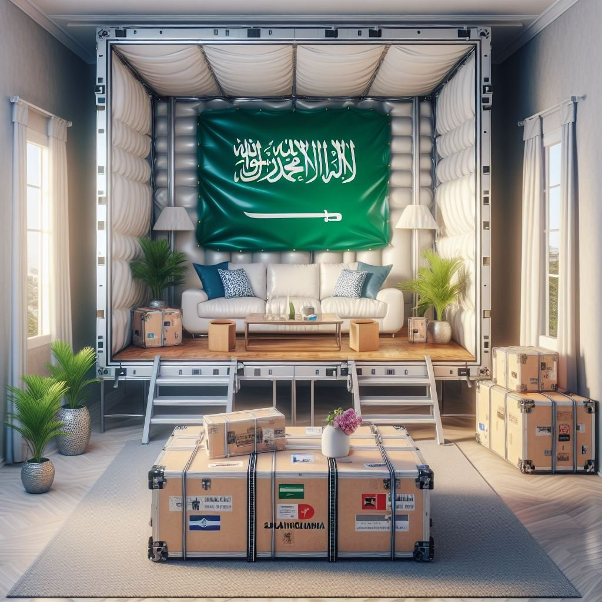
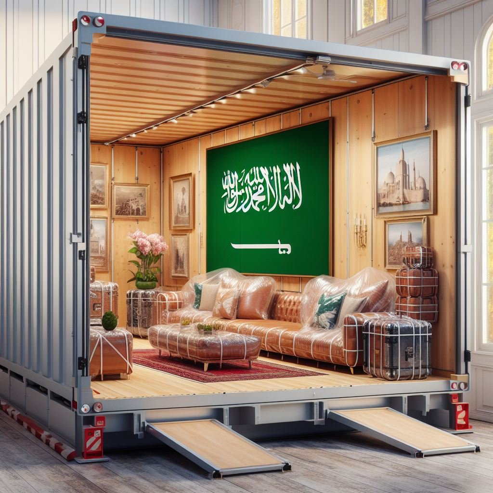
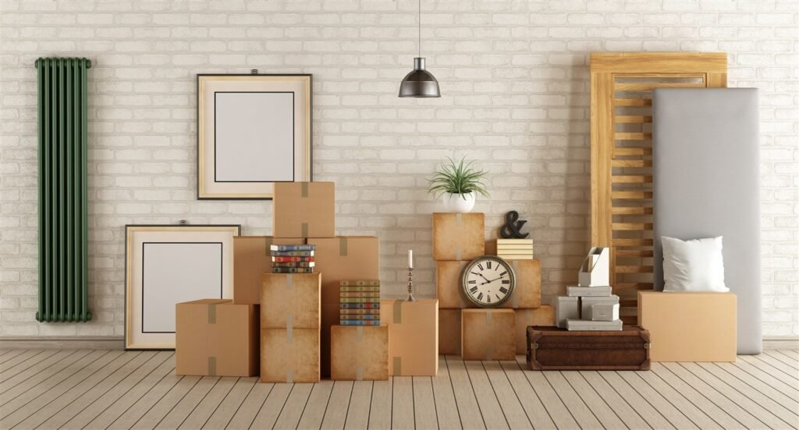
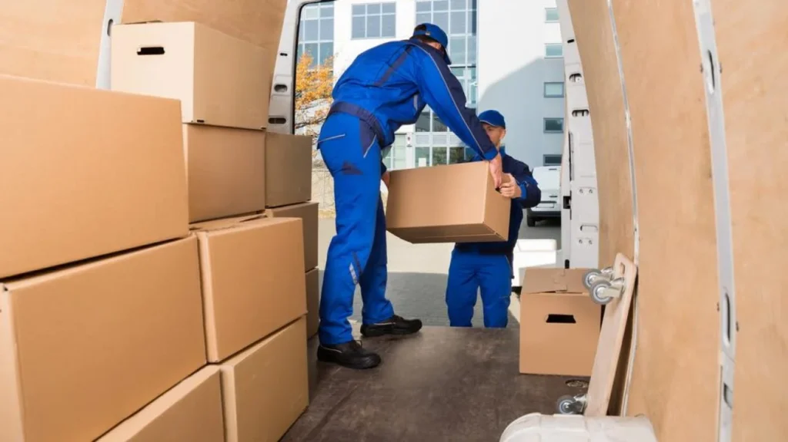

نقل عفش بالرياض
نقل عفش بالرياض
عند التفكير في الانتقال إلى منزل جديد أو تغيير موقع العمل داخل الرياض، قد يبدو نقل العفش مهمة صعبة ومرهقة. فعملية نقل عفش بالرياض تتطلب عناية فائقة لضمان وصوله بأمان إلى الموقع الجديد دون أي تلفيات. وهنا تظهر أهمية اختيار شركة لنقل عفش بالرياض، إذ تُعد شركة “نقل الرياض” من الشركات الرائدة التي تقدم خدمات متنوعة وموثوقة لعملائها في هذا المجال، مع الحرص على تقديم أسعار تنافسية تتناسب مع مختلف الميزانيات.
اتصل بنا الانخدماتنا
ارخص شركة نقل عفش بالرياض
نوفر في نقل الرياض مجموعة من الخدمات المنزلية المتكاملة داخل مدينة الرياض، تشمل:
نقل
العفش – صيانة وتنظيف المكيفات – تنظيف المنازل والمكاتب – مكافحة الحشرات.
جودة وسرعة وعروض مستمرة
على مدار العام.
🚚 حلول اقتصادية لنقل العفش بالرياض
تبحث العديد من العائلات والشركات عن حلول اقتصادية لنقل عفش بالرياض، خاصةً مع زيادة تكاليف الانتقال واحتياجات التعبئة والتغليف. تقدم شركة “نقل الرياض” خدمات نقل عفش بالرياض بأسعار تنافسية تناسب جميع الفئات، مع الحرص على تقديم جودة عالية ومهنية في كل عملية نقل.
باقات وأسعار متنوعة تناسب الجميع📦
تهتم شركة نقل الرياض أفضل نقل عفش بالرياض بتوفير باقات وأسعار متنوعة تتناسب مع ميزانيات العملاء، حيث تقدم خدمة النقل الأساسية التي تشمل تعبئة الأثاث ونقله، وأيضًا باقات متميزة تشمل خدمات إضافية مثل فك وتركيب المكيفات، وتغليف القطع الهشة بأعلى درجات الأمان.
⚖️ خيارات مرنة بدون أعباء مالية
هذا التنوع في الخيارات يتيح للعملاء فرصة الاستفادة من خدمة نقل عفش بالرياض دون أن يشكل الأمر عبئًا ماليًا كبيرًا.
جودة عالية مع أقل الأسعار 🛠️
تعد “نقل الرياض” أرخص شركة نقل عفش بالرياض، لكنها لا تتنازل عن الجودة. فالهدف الأساسي للشركة هو تقديم خدمة نقل عفش عالية المستوى تلبي توقعات العملاء، وتجعل من عملية الانتقال تجربة مريحة وسلسة. بفضل الفريق المدرب وأسطول دينا نقل عفش بالرياض الحديثة، يستطيع العملاء الانتقال بثقة وراحة مع “نقل الرياض”.

نقل عفش بالرياض
افضل شركة نقل عفش بالرياض
تعتبر الجودة والكفاءة من أهم العوامل التي يبحث عنها العملاء عند اختيار شركة نقل عفش بالرياض. وقد نجحت شركة نقل الرياض أفضل شركة نقل اثاث بالرياض في بناء سمعة طيبة بفضل الالتزام بمعايير عالية من الخدمة، والاعتماد على أحدث المعدات والتقنيات لضمان نقل الأثاث بطريقة آمنة وسريعة. يتميز فريق العمل لدى “نقل الرياض” بمهاراته العالية، فهو مدرب جيدًا على التعامل مع جميع أنواع الأثاث، من قطع الأثاث الكبيرة والثقيلة إلى القطع الحساسة والقابلة للكسر.
ما يجعل “نقل الرياض” تستحق لقب افضل شركة نقل عفش بالرياض هو اهتمامها بالتفاصيل الصغيرة التي تهم العميل، كالتأكد من تغليف الأثاث قبل النقل باستخدام مواد قوية وواقية، وحماية الأغراض الهشة بشكل خاص. كما توفر الشركة خدمة الدعم الفني على مدار الساعة للرد على استفسارات العملاء وتقديم النصائح التي تجعل من عملية النقل تجربة سهلة وخالية من الإجهاد.

نقل عفش
شركه نقل عفش غرب الرياض
لا تقتصر خدمات نقل عفش بالرياض لشركة “نقل الرياض” على منطقة شمال الرياض فحسب، بل تشمل أيضًا نقل أثاث شرق الرياض التي تشهد نموًا سكانيًا متسارعًا. تقدم الشركة خدمات نقل عفش بالرياض في الشرق، مع التركيز على توفير حلول مرنة تلبي احتياجات العملاء وتتناسب مع طبيعة المنطقة.
تعتبر “نقل الرياض” من الشركات التي تهتم بتغطية جميع مناطق الرياض لتكون قريبة من عملائها، وتضمن سرعة الاستجابة. يتميز فريق العمل بمعرفة جيدة بجغرافيا المنطقة، مما يساعدهم على اختيار المسارات الأسرع والأكثر أمانًا لنقل الأثاث. كما أن الشاحنات المستخدمة في نقل العفش مُعدة خصيصًا لتحمل الطرق المختلفة، مما يضمن أن الأثاث سيصل بسلامة إلى الموقع الجديد في أسرع وقت ممكن.

نقل اثاث
شركه نقل عفش شمال الرياض
تتميز منطقة شمال الرياض بأنها من أكثر المناطق السكنية حيوية، ويزداد فيها الطلب على خدمات نقل العفش بشكل ملحوظ. توفر شركة “نقل الرياض” خدمات نقل عفش بالرياض في منطقة الشمال، لتلبية احتياجات السكان الذين يرغبون في الانتقال داخل هذه المنطقة أو الانتقال منها إلى مناطق أخرى.
تتمتع “نقل الرياض” بخبرة كبيرة في التعامل مع تحديات المناطق الشمالية في الرياض، مثل الزحام المروري وصعوبة الوصول إلى بعض الأحياء. ولضمان سلاسة عملية النقل، توفر الشركة خدمات نقل العفش بواسطة فريق متخصص ومجهز للتعامل مع أي ظروف قد تواجههم أثناء عملية النقل. هذا الأمر يضمن وصول الأثاث بسلامة ودون أي تأخير إلى الموقع الجديد.

نقل اثاث بالرياض
شركة مكافحة حشرات بالرياض
تعتبر الجودة والكفاءة من أهم العوامل التي يبحث عنها العملاء عند اختيار شركة نقل عفش بالرياض. وقد نجحت شركة “نقل الرياض” في بناء سمعة طيبة بفضل الالتزام بمعايير عالية من الخدمة، والاعتماد على أحدث المعدات والتقنيات لضمان نقل الأثاث بطريقة آمنة وسريعة. يتميز فريق العمل لدى “نقل الرياض” بمهاراته العالية، فهو مدرب جيدًا على التعامل مع جميع أنواع الأثاث، من قطع الأثاث الكبيرة والثقيلة إلى القطع الحساسة والقابلة للكسر.

نقل عفش بالرياض
ارخص شركه نقل عفش بالرياض
تبحث العديد من العائلات والشركات عن حلول اقتصادية لنقل عفش بالرياض، خاصةً مع زيادة تكاليف الانتقال واحتياجات التعبئة والتغليف. تقدم شركة “نقل الرياض” خدمات نقل عفش بالرياض بأسعار تنافسية تناسب جميع الفئات، مع الحرص على تقديم جودة عالية ومهنية في كل عملية نقل.

نقل عفش بالرياض
نقل اثاث بالرياض ,افضل شركه نقل اثاث نمتلك دينات مجهزه لنقل الاثاث داخل جميع مناطق الرياض

تغليف و تخزين اثاث
خدمات تغليف الاثاث , خدمات تغليف و تخزين العفش نستخدم خامت عاليه الجوده و ادوات تغليف حديثه
Faq
شركه نقل الرياض لنقل الاثاث
شركه نقل عفش
تعد شركة نقل العفش من الخدمات الضرورية للأفراد والعائلات عند الانتقال إلى منزل جديد. فهي تقدم جميع الخدمات المتعلقة بنقل الأثاث، بما في ذلك التعبئة والتغليف وحماية الأثاث من أي خدوش أو كسور. تُعنى الشركة بتوفير معدات خاصة لرفع ونقل الأثاث الثقيل بأمان. وبفضل الخبرة المهنية، تضمن شركة نقل العفش سلاسة الانتقال وتوفير وقت العميل وجهده، مع الالتزام بالمواعيد المحددة. من خلال فريق متخصص ومهني، تقدم هذه الشركات خدمات ذات جودة عالية وتحرص على تلبية احتياجات العملاء وفق أعلى معايير السلامة والأمان.
كراتين نقل عفش
تلعب كراتين نقل العفش دورًا هامًا في حماية الأثاث والأغراض أثناء الانتقال. فهي توفر حلاً عمليًا لتعبئة الأدوات المنزلية، مثل الأواني الزجاجية، الكتب، الملابس، والأجهزة الإلكترونية، بشكل منظم وآمن. يتم استخدام كراتين مصممة خصيصًا لحماية المحتويات من الصدمات والخدوش خلال عملية النقل. توفر بعض الشركات كراتين بأحجام وأشكال متعددة لتناسب جميع أنواع الأغراض، مع إمكانية وضع ملصقات توضح محتويات كل كرتونة لسهولة التنظيم في المنزل الجديد. يعد استخدام كراتين عالية الجودة خطوة هامة للحفاظ على سلامة العفش وتسهيل عملية النقل والترتيب.
دينا نقل عفش
تعتبر خدمة “دينا نقل عفش” حلاً مثاليًا لمن يحتاجون لنقل الأثاث داخل المدن بشكل سريع ومرن. شاحنات “الدينا” تتميز بحجمها المناسب للتنقل في الشوارع الضيقة، مما يجعلها خيارًا مناسبًا للأحياء السكنية في المدن الكبرى. تتوفر شاحنات “الدينا” بأحجام مختلفة، حيث يستطيع الفريق تحميل الأثاث بها بمرونة، مع ضمان الحفاظ على الأغراض من الخدوش والتلف. توفر شركات النقل خدمات استخدام “دينا” للعمليات الصغيرة أو المتوسطة، مما يجعلها اقتصادية وملائمة للعديد من الأفراد والعائلات الراغبين في الانتقال بتكلفة مناسبة وراحة تامة.
افضل شركه نقل اثاث
البحث عن أفضل شركة نقل أثاث يعد أمرًا ضروريًا لضمان تجربة نقل مريحة وآمنة. تتميز أفضل شركات نقل الأثاث بامتلاك فرق عمل مدربة وأسطول شاحنات مخصص لنقل جميع أنواع الأثاث بأمان واحترافية. تقدم هذه الشركات خدمات شاملة تتضمن التعبئة والتغليف، فك وتركيب الأثاث، وتأمين الأدوات الثمينة والهشة. كما تتميز بمرونة في مواعيد العمل والاستجابة السريعة لاحتياجات العملاء، إضافة إلى الالتزام بتقديم جودة عالية في الخدمة مقابل تكلفة معقولة. اختيار أفضل شركة نقل أثاث يوفر تجربة انتقال سلسة ويوفر الوقت والجهد على العملاء
فك و تركيب الاثاث
خدمة فك وتركيب الأثاث تعد من الخدمات الأساسية في عملية نقل عفش بالرياض، حيث تضمن الحفاظ على سلامة الأثاث أثناء النقل وإعادة تركيبه بشكل صحيح في الموقع الجديد. تعتمد هذه الخدمة على فريق من المتخصصين الذين يمتلكون أدوات ومعدات متطورة لتفكيك الأثاث الكبير والمعقد، كالأسرّة والخزائن، بسهولة وأمان. بعد النقل، يتم إعادة تركيب الأثاث وفقًا للترتيب المطلوب، مما يسهل على العميل الاستقرار في منزله الجديد بسرعة. تضمن خدمات فك وتركيب الأثاث جودة النقل وسلامة الأثاث، ما يوفر الوقت والجهد ويعزز من كفاءة العملية الانتقالية.
خدماتنا
شركات نقل عفش بالرياض
عندما نتحدث عن شركات نقل عفش بالرياض، فإننا نشير إلى مجموعة واسعة من الخدمات التي تُقدم لتلبية احتياجات الأفراد والشركات على حد سواء. تقدم هذه الشركات حلولًا شاملة تتراوح بين تغليف الأثاث، وفكه وتركيبه، وحتى تخزينه إذا لزم الأمر.
نقل اثاث بالرياض
- نقل عفش
- افضل شركه نقل اثاث بالرياض
- دينا نقل عفش بالرياض
- شركه نقل عفش بالرياض
- نقل العفش والأثاث مع الفك والتركيب
- تغليف وتخزين الاثاث
دينا نقل عفش
- دينا نقل عفش شمال الرياض
- دينا نقل عفش غرب الرياض
- دينا نقل عفش جميع احياء الرياض
نقل عفش بالرياض
- سيارات نصف نقل لنقل العفش بالرياض
- نقل اثاث شمال الرياض
- نقل اثاث غرب الرياض
- نقل عفش في وادي الدواسر
- نقل اثاث جميع احياء الرياض
- نقل عفش من الأحساء للرياض
تواصل معنا الان
فريق خدمه عملاء شركه نقل الرياض فى انتظار تواصلكم معنا
تواصل معنا الان